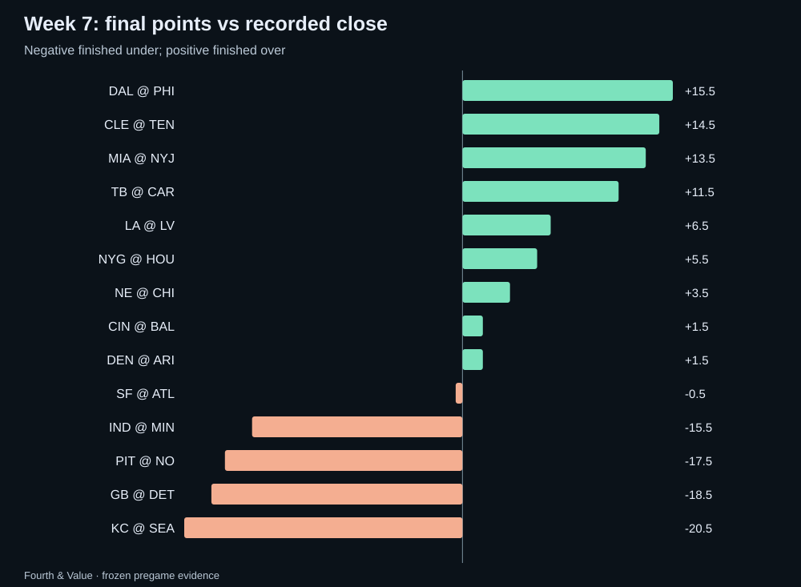
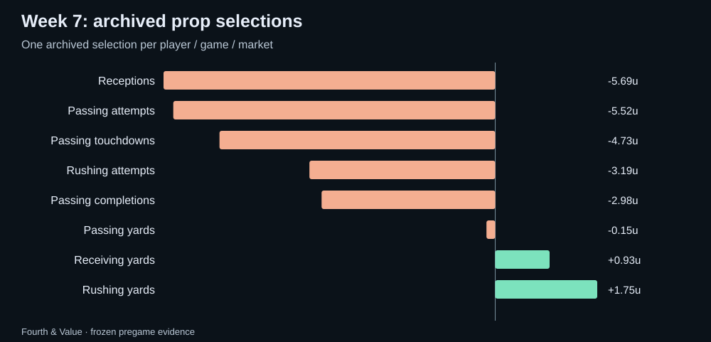
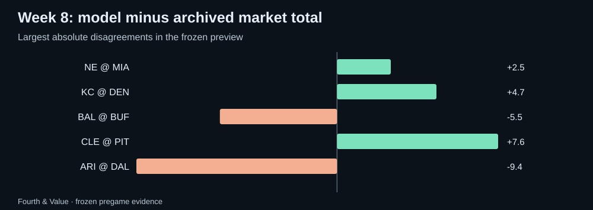

Fourth & Value · Weekly market review
NFL Week 7 review: the model receipts and the Week 8 watchlist
An audited Week 7 scorecard using frozen pregame data, plus Fourth & Value model-market disagreements to research for Week 8.
Week 7: the market scoreboard
Recorded closes produced 9 overs, 5 unders and 0 pushes. Against our archived market median, 8 games finished over, 6 under and 0 pushed.
The raw totals model direction went 7–7 with 0 pushes and -0.40u across 14 games with archived same-line prices; 0 unpriced directions are excluded from profit/loss. Mean absolute error was 10.56 points for the model versus 10.43 for the archived market median and 10.43 for the recorded close.

The model scorecard
The deduplicated published shortlist contained 133 selections; 133 were conservatively graded and 0 remain unresolved. The graded set went 53–80 with 0 pushes for -19.58u, or -14.7% on units risked. Missing participation or missing statistics remain unresolved rather than becoming automatic unders.
| Market | W–L | Net units | Unresolved |
|---|---|---|---|
| Rushing yards | 7–6 | +1.75u | 0 |
| Receiving yards | 2–1 | +0.93u | 0 |
| Passing yards | 1–2 | -0.15u | 0 |
| Passing completions | 2–5 | -2.98u | 0 |
| Rushing attempts | 5–8 | -3.19u | 0 |
| Passing touchdowns | 6–13 | -4.73u | 0 |
| Passing attempts | 4–9 | -5.52u | 0 |
| Receptions | 26–36 | -5.69u | 0 |

Closing-line value report card
Each published pick’s price compared with the closing market: the median no-vig chance across US books at the pick’s exact line, captured in the final minutes before the start. Value at the close is how much more the published price paid than that closing chance justified; beat the close is the share of picks where it was positive; market move is how far the closing chance moved toward our side (positive) or away from it (negative) after the pick. Over many picks, value at the close is the earliest reliable sign of a real edge, long before win–loss results settle down. It is a measure of price, not a guarantee.
| Edition | Picks | Closing prices | Value at the close | Beat the close | Market move |
|---|---|---|---|---|---|
| Morning picks | 1 | 1 | -1.9% | 0% | -2.6 pts |
| Afternoon picks | 0 | 0 | — | — | — |
| All picks this week | 1 | 1 | -1.9% | 0% | -2.6 pts |
| All picks since 2026-10-19 | 2 | 2 | -3.8% | 0% | -2.4 pts |
Probability quality, not just profit
Across 314 representative non-push outcomes with both probabilities available, the model Brier score was 0.2544 versus 0.2465 for the de-vigged consensus. The game-block 95% interval for model minus market Brier was +0.0004 to +0.0156.
A positive one-week return and a better probability score are different claims. This report keeps both because a profitable slate can still expose probability weaknesses, and vice versa.
Week 8: disagreement is a research question
The new weekly refresh is frozen before the first kickoff. The largest raw totals disagreements are:
- ARI @ DAL: model 45.1 vs archived median 54.5 (-9.4). This is a research gap, not a calibrated edge.
- CLE @ PIT: model 47.1 vs archived median 39.5 (+7.6). This is a research gap, not a calibrated edge.
- BAL @ BUF: model 48.5 vs archived median 54.0 (-5.5). This is a research gap, not a calibrated edge.
- KC @ DEN: model 45.7 vs archived median 41.0 (+4.7). This is a research gap, not a calibrated edge.
- NE @ MIA: model 46.5 vs archived median 44.0 (+2.5). This is a research gap, not a calibrated edge.

Player props to recheck
- Caleb Williams Passing attempts under 32.5 at draftkings (-115); saved model mean 26.43, model probability 98.0%, estimated EV +83.2%. Calibration fitted; not prospectively validated
- Bo Nix Passing touchdowns over 1.5 at fanduel (+194); saved model mean 1.05, model probability 48.2%, estimated EV +41.8%. Calibration fitted; not prospectively validated
- Daniel Jones Passing touchdowns under 0.5 at draftkings (+183); saved model mean 0.55, model probability 50.0%, estimated EV +41.5%. Calibration fitted; not prospectively validated
- Derrick Henry Receptions over 1.5 at betrivers (+160); saved model mean 1.63, model probability 54.1%, estimated EV +40.6%. Calibration fitted; not prospectively validated
- Cam Ward Passing touchdowns under 0.5 at betrivers (+175); saved model mean 0.55, model probability 50.0%, estimated EV +37.5%. Calibration fitted; not prospectively validated
These are saved prices from the weekly archive. Recheck the current line, price, injury status and role before treating any one of them as actionable. Model status labels are shown rather than hidden.
Audit notes
The scorecard uses hash-verified immutable weekly pregame archives.
The completed-week scorecard uses only the frozen pregame archive for Week 7 and official results/player statistics available after the games. The preview uses a separate frozen Week 8 archive. The workflow refuses to create a new archive after a game has started, refuses to overwrite an existing archive whose hashes do not match, and refuses to publish a review while any official Week 7 game remains unplayed.
Download the public review data · Current NFL board · How updates work · All recaps · Previous weekly review · Back to Fourth & Value